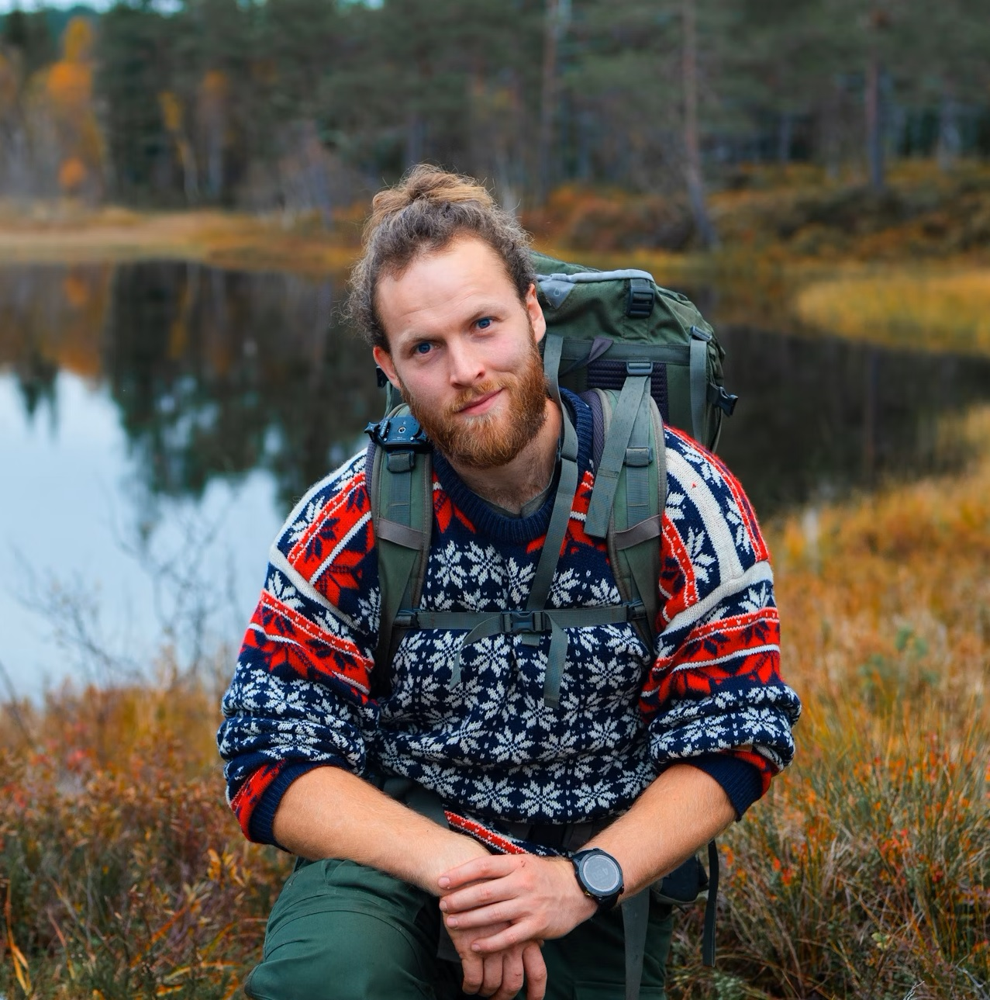

Sobre Mí

Mi Historia
Soy un guía profesional de senderismo con más de 10 años de experiencia en la región de El Chaltén. Nacido y criado en la Patagonia, mi pasión por las montañas comenzó desde muy joven. He recorrido cada rincón de estos paisajes y conozco los secretos mejor guardados de la zona.
Mi objetivo es compartir no solo los senderos, sino también la historia, geología y cultura de este lugar único en el mundo, ofreciendo experiencias seguras y memorables.
Certificaciones y Experiencia
- Guía profesional certificado por AAGM (Asociación Argentina de Guías de Montaña)
- Primeros auxilios en zonas agrestes (WFR - Wilderness First Responder)
- Especialista en trekking y montañismo
- Más de 500 excursiones guiadas en El Chaltén
- Idiomas: Español, Inglés y Portugués